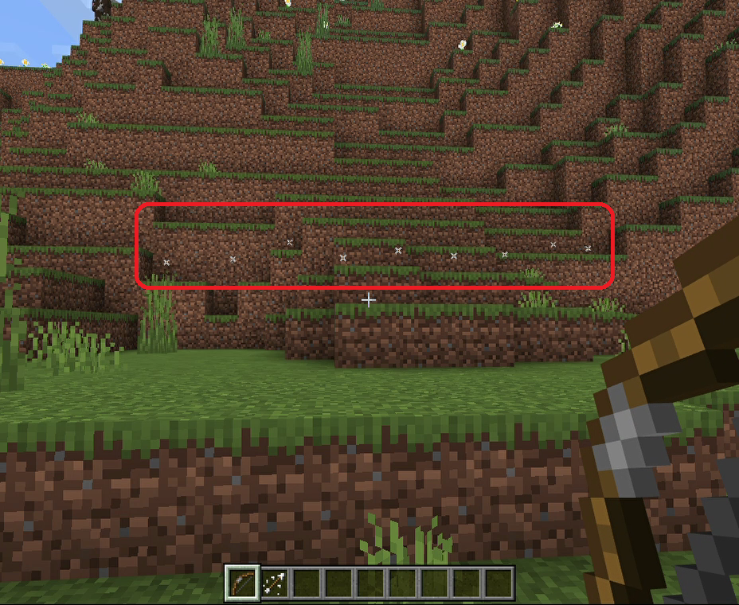
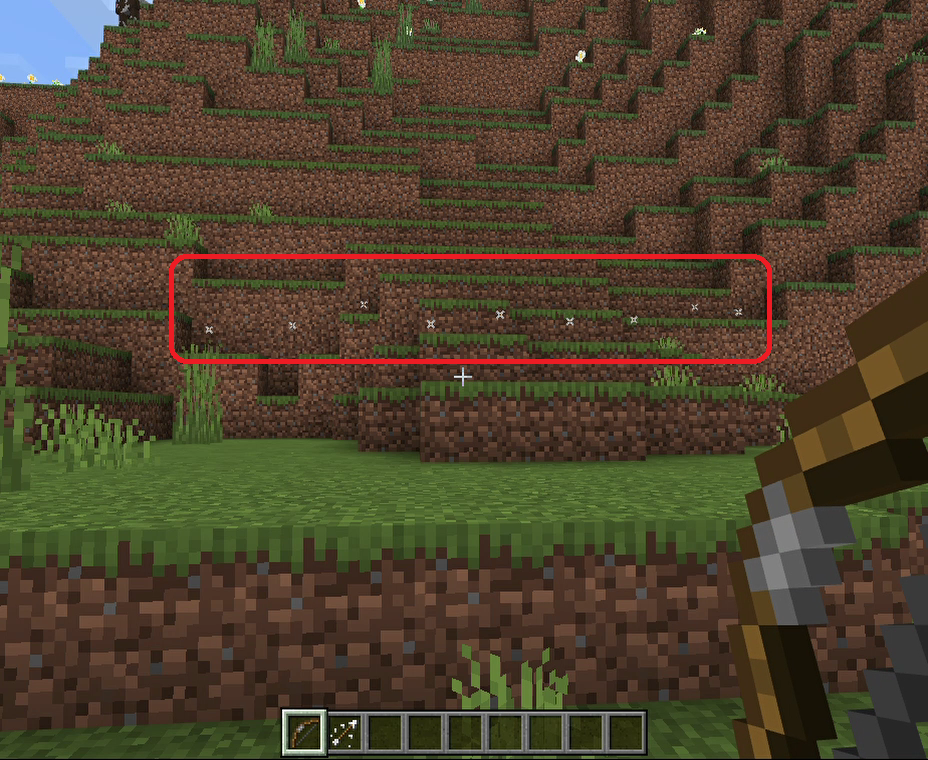

【機雷の弓】
はじめに
このアイテムは単体では機能しませんが、例えばこれを使うと以下の様な事ができます。

このように複数の特殊機能の矢を同時発動させるしくみです。
このように複数の特殊機能の矢を同時発動させるしくみです。
使い方
「機雷の弓」で放った矢は機雷化します。
そして「いなずまの矢」や「はかいの矢」が起爆装置の代わりになります。
例えば先に「機雷の弓」を使って以下の赤枠のように矢を横に並べて放っていたとします。

そこに「いなずまの矢」を打ち込むと．．．
冒頭の画面では機雷化した矢を一箇所に集中させていましたが横に並べる事で範囲を拡げています。
また、機雷化した矢を複数使った方が威力も上がるようです。
例えば「はかいの矢」を１回使うと以下のような感じですが．．．
機雷化した矢を一箇所に集中させて起爆すると以下のように破壊力が上がっています。
そして「いなずまの矢」や「はかいの矢」が起爆装置の代わりになります。
例えば先に「機雷の弓」を使って以下の赤枠のように矢を横に並べて放っていたとします。

そこに「いなずまの矢」を打ち込むと．．．
冒頭の画面では機雷化した矢を一箇所に集中させていましたが横に並べる事で範囲を拡げています。
また、機雷化した矢を複数使った方が威力も上がるようです。
例えば「はかいの矢」を１回使うと以下のような感じですが．．．
機雷化した矢を一箇所に集中させて起爆すると以下のように破壊力が上がっています。
「機雷の弓」の取得
本環境のビヘイビアパック／リソースパックなどのアドオンパックを適用しておけば、以下の方法でユニークアイテムとして「機雷の弓」が手に入ります。
▶ネットショップ
ショップで購入する場合
以下のショップで購入できます。▶ネットショップ
コマンドで取得する場合
以下はワールドオーナーやシステム組み込み用としてコマンドで取得する方法です。サーバー側の実装
今回も他の弓矢のアイテムと同様に"ItemUsed"というサブスクライブイベントを使用しています。
マインクラフト上でアイテムを使ったと認識されると発生するイベントのようです。
※サブスクライブイベントの処理内容については>> こちらでご紹介しています。
その為、矢を放った時点のエンティティにはタグが付与されていないので、既にスポーン済の矢と区別ができるようになります。
但し同時に矢を放った相手がいる場合はプレイヤーの区別ができない為完璧とはいきませんが、この場合は先に放った方が先勝ちとなり矢の機能が発動します。
「いなずまの矢」や「はかいの矢」の場合は
また「機雷の弓」を使って敢えて同じ
Java版の場合はプレイヤーから一定距離内の矢を検知してタグを付与する方法が使われる事がありますが、近くに別のプレイヤーがいる状況でゲームチックのタイミングによっては付与対象となる矢を見誤る事があるのでこれも完璧とはいきません。故に今回はこの部分の対応を見送っています。
※「機雷の弓」の
※以下の黄色の部分が今回追加・修正したところです。
マインクラフト上でアイテムを使ったと認識されると発生するイベントのようです。
※サブスクライブイベントの処理内容については>> こちらでご紹介しています。
{
"body":
{
"count":<数字>,
"item":
{
"aux":451,
"id":"bow",
"namespace":<文字列>
},
"player":
{
"color":<16進数？>,
"dimension":<数字>,
"id":<数字>,
"name":<文字列>,
"position":
{
"x":<数字>,
"y":<数字>,
"z":<数字>
},
"type":<文字列>,
"variant":<数字>,
"yRot":<数字>
},
"useMethod":<数字>
},
"header":
{
"eventName":"ItemUsed",
"messagePurpose":<文字列>,
"version":<数字>
}
}
タグの付与について
この環境の矢にはターゲットセレクタを機能させるために以下のような特徴を持っています。- ■前提条件
- 同じワールド内の全マルチプレイユーザーがWebsocketサーバーに接続済で、ワールド内の全ての矢のエンティティには何等かのタグが付与されている
- ■"normal"タグの付与
- 通常の矢には"normal"タグを付与する
- ■"cheat"タグの付与
- 特殊な機能を持つ矢には"cheat"タグを付与する
その為、矢を放った時点のエンティティにはタグが付与されていないので、既にスポーン済の矢と区別ができるようになります。
但し同時に矢を放った相手がいる場合はプレイヤーの区別ができない為完璧とはいきませんが、この場合は先に放った方が先勝ちとなり矢の機能が発動します。
「いなずまの矢」や「はかいの矢」の場合は
cheatタグの付与後すぐに機能を発動させていますが「機雷の弓」の場合はタグを付与するだけで終了しているところが異なります。また「機雷の弓」を使って敢えて同じ
cheatタグを付与する事で、その後使用する起爆装置によって機能を切り替えられるようにしています。Java版の場合はプレイヤーから一定距離内の矢を検知してタグを付与する方法が使われる事がありますが、近くに別のプレイヤーがいる状況でゲームチックのタイミングによっては付与対象となる矢を見誤る事があるのでこれも完璧とはいきません。故に今回はこの部分の対応を見送っています。
キューとステータスUNITの登録
今回は他の弓矢と同じものを使っているので特筆すべきところはありません。新規実装箇所
ITEM_USEDキューの２番目のステータスUNIT（矢のイベント取得処理）を以下のように修正しています。getCommandDataForArrowTagCheatメソッドでタグだけ付与して処理を終了しています。※「機雷の弓」の
auxデータ値（451）はビヘイビアパックで定義しています。※以下の黄色の部分が今回追加・修正したところです。
protected function getItemUsedArrow()
{
return function(ParameterForMinecraft $p_param): ?string
{
$p_param->logWriter('debug', ['MINECRAFT ITEM_USED:ARROW' => 'START']);
$sta = $p_param->getStatusName();
// 受信データの取得
$rcv = $p_param->getRecvData();
if($rcv === null)
{
// ディスパッチャー強制
$p_param->setForcedDispatcher(true);
return $sta;
}
// ItemUsed以外のイベントの判定
if(!(isset($rcv['data']['header']['eventName']) && $rcv['data']['header']['eventName'] === 'ItemUsed'))
{
return $sta;
}
// 弓タイプの取得
$bow_type = $p_param->getTempBuff(['bow_type']);
// 通常の矢の場合
if($bow_type['bow_type'] !== 451 && $rcv['data']['body']['item']['aux'] === 0)
{
// コマンド送信
$cmd_data = $p_param->getCommandDataForArrowTagNormal($rcv['data']['body']['player']['name']);
$data =
[
'data' => $cmd_data
];
$p_param->setSendStack($data);
return null;
}
// コマンド送信
$cmd_data = $p_param->getCommandDataForArrowTagCheat($rcv['data']['body']['player']['name']);
$data =
[
'data' => $cmd_data
];
$p_param->setSendStack($data);
// 機雷の弓で放たれた矢の場合
if($rcv['data']['body']['item']['aux'] === 0)
{
return null;
}
// コマンドデータの取得
if($rcv['data']['body']['item']['aux'] === 411)
{
// いなずまの矢
$cmd_data = $p_param->getCommandDataForThunderArrow($rcv['data']['body']['player']['name']);
}
else
if($rcv['data']['body']['item']['aux'] === 421)
{
// はかいの矢
$cmd_data = $p_param->getCommandDataForExplodeArrow($rcv['data']['body']['player']['name']);
}
// コマンド送信
$data =
[
'data' => $cmd_data
];
$p_param->setSendStack($data);
return null;
};
}